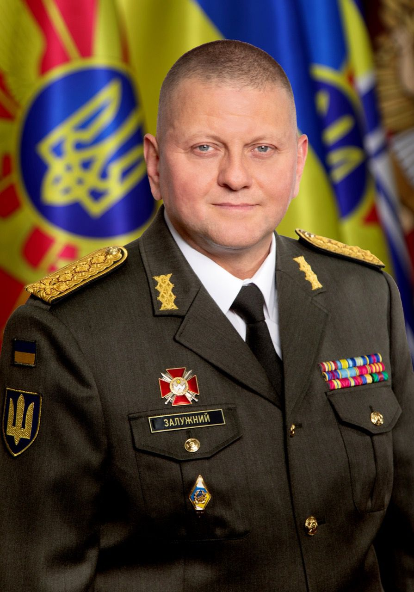

Біографія Валерія Залужного

48-річний генерал Валерій Залужний керує Збройними силами України менше року, але західні ЗМІ його уже називають легендарною постаттю в історії України. До повномасштабного вторгнення РФ його ім’я було відоме переважно лише фахівцям, а тепер саме Залужного називають тією людиною, завдяки якій росіянам досі не вдалося виконати жоден з амбіційних планів: ні захопити Київ за 48 годин, ні створити «ХНР» на Херсонщині, ні отримати перемогу на Донбасі до 9 травня.
Зірки на погонах – не привід бути пихатим
В уявленні багатьох людей при згадуванні слів «генерал», «військовий начальник», «командир Збройних сил» в голові випливе нав’язаний ще радянськими стереотипами сивочолий, жорсткий дядько років 70-ти, обвішаний усіма існуючими медалями та орденами, при вигляді якого стає не по собі. Так от: керівник Збройних сил України Валерій Залужний ламає цей стереотип. По-перше, подивіться на його фотографії: часто усміхнений, по-юнацьки жестикулює, робить селфі з військовими в окопах. Американці називають таких людей human person, «людська людина», якщо перекласти дослівно, хоча доречніше буже вжити тут епітет «людяна».
Біографія Залужного говорить про те, що до найвищої посади у Збройних силах України він йшов поступово, хоча сам він в одному з інтерв’ю казав, що не сподівався стати генералом. Валерій Залужний народився 8 липня 1973 року в Новоград-Волинському у родині військовослужбовців. Вищу освіту він здобув уже у незалежній Україні і це суттєво вплинуло на його світогляд та розуміння військової справи.
У 1997 році він закінчив з відзнакою загальновійськовий факультет Одеського вищого командного училища. Після цього Залужний пройшов усі щаблі військової служби: командир навчального взводу, командир бойового взводу, командир навчальної роти, командир роти курсантів, командир батальйону. У 2007 році він отримав другу вищу військову освіту в стінах Національної академії оборони, а 2014 року закінчив Національний університет оборони України імені Івана Черняховського. Того ж року Залужний отримав нове призначення на сході України, де розпочалась війна.
Реформатор на фронті
У 2014 році Залужного відправили на схід заступником командира сектора «С», група якого в серпні 2014 року була розгорнута у Дебальцевому – місті, де точилися одні з найкривавіших боїв. Відтоді Залужний керував майже всіма угрупованнями, які там створювали. Попри те, що у 2017 році Залужний отримав звання генерала, він не поспішав переводитися на штабні посади і продовжував роботу на передовій.
У 2018 році Залужного призначили начальником штабу ООС. Коли він був на цій посаді, українські військові звільнили кілька населених пунктів, зокрема, селище Південне біля підконтрольної російським силам Горлівки та просунулися вперед поблизу Волновахи.
27 липня 2021 року президент призначив Валерія Залужного Головнокомандувачем Збройних Сил України. Він змінив на цій посаді Руслана Хомчака. Одразу після призначення Залужний заявив, що його пріоритетом є перехід ЗСУ від радянських стандартів до стандартів НАТО. І мав на увазі не лише озброєння та методи ведення війни.
«Ключове тут — принципи. Зміни мають відбутися перш за все у світогляді і ставленні до людей. Я б хотів, щоб ви повернулися обличчям до людей, до своїх підлеглих. Моє ставлення до людей не змінювалося протягом всієї моєї служби»,– заявляв Залужний.
Одним з перших кроків Залужного як командувача ЗСУ був дозвіл військовим в зоні ООС відкривати вогонь у відповідь без узгодження з вищим керівництвом. Таким чином на фронті позбулися зайвої бюрократії і почали вести бої ефективніше.
Залізний генерал
У вересні 2021 року, коли Росія і Білорусь розпочали спільна масштабні військові навчання, Валерій Залужний заявив, що Україна вже готується до широкомасштабного наступу.
Я про це кажу з моменту мого вступу на цю посаду. Загроза повномасштабної агресії є, була й буде далі. Наше завдання як ЗСУ – не чекати „манни небесної“, ми маємо до цього готуватися. І ми для цього все робимо. У тому числі проводимо комплекс навчань, у тому числі залучаємо і наших західних партнерів, у тому числі і членів НАТО, а також партнерів по НАТО»,- казав Залужний.
«Наші партнери в НАТО підтвердили сьогодні – вони наразі чудово усвідомлюють ціну, яку доведеться заплатити, якщо не робити нічого. Вони пам’ятають, до чого призвела така бездіяльність у 38-39 роках минулого століття. Напевно, щось більше варто було зробити у 2008 році, дійсно використати політичні важелі впливу, коли розпочалася війна проти Грузії. Щось більше, напевно, можна було зробити в 2014 році, коли Росія розпочала агресію проти України, окупувала Крим та частину Донбасу. Саме на такий, політичний вплив Альянсу ми дійсно покладаємо надії. В решті – розраховуємо на свої сили», – сказав Залужний, наголосивши, що українська армія все одно готується до масштабного нападу. Ця підготовка була дуже важливою, про що ми можемо говорити сьогодні, коли широкомасштабна війна тиває уже більше двох місяців. У цьому ж інтерв’ю «Укрінформу», яке було опублуковане за місяць до масштабного нападу Росії, Залужний відповів на питання, що для нього означатиме перемога у війні: «Для нас, військових, Перемогою стане день, коли останній окупант залишить нашу територію, коли буде відновлений державний кордон України, коли перестануть гинути мої солдати на своїй землі. Ось тоді для мене настануть мир і Перемога».